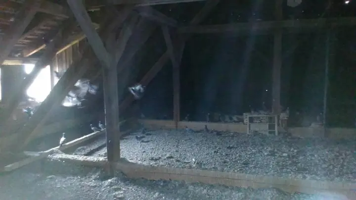
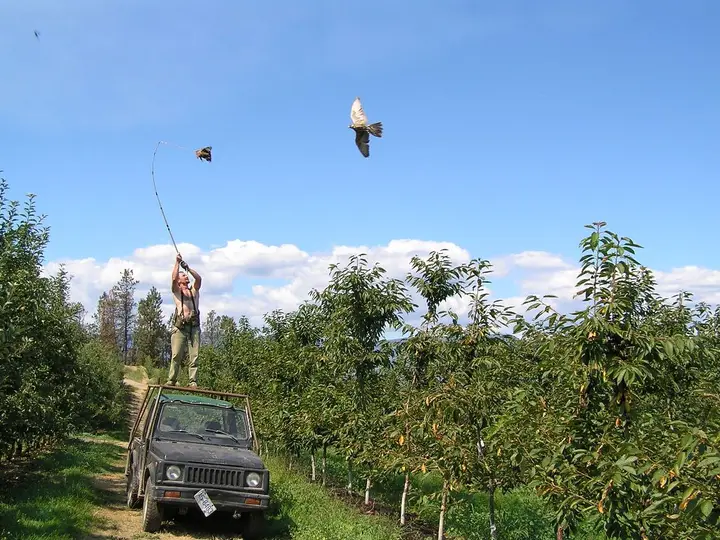
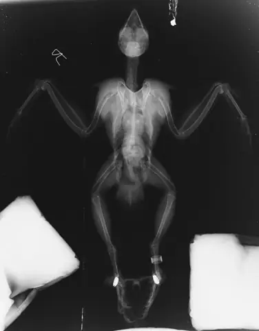
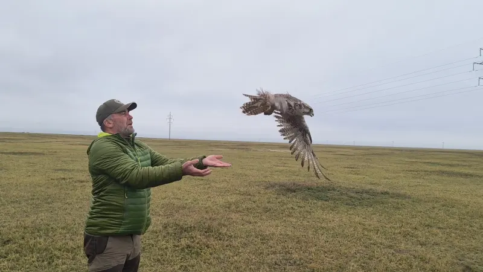

Fotogaléria
Fotografie a videá z našej práce
Vyberte si tému. Po otvorení kategórie zobrazíte fotografie vo väčšom náhľade a môžete medzi nimi listovať šípkami alebo potiahnutím prsta.
Fotografie
12 kategórií 9 fotografiíOdchyt holubovŽivolovné pasce na strechách budov a odchyt mestských holubov.
9 fotografiíOdchyt holubovŽivolovné pasce na strechách budov a odchyt mestských holubov.
15 fotografiíPovaly a vežePovaly, zvonice a podkrovia obsadené holubmi – stav pred vyčistením. 18 fotografiíVypúšťanie sokolovVypúšťacie zariadenie na streche, mladé sokoly a ich vypustenie.
18 fotografiíVypúšťanie sokolovVypúšťacie zariadenie na streche, mladé sokoly a ich vypustenie. 27 fotografiíVoľný let – fotopasceMladé sokoly vo vypúšťacom zariadení a na okolitých strechách.
27 fotografiíVoľný let – fotopasceMladé sokoly vo vypúšťacom zariadení a na okolitých strechách.
28 fotografiíBiologická ochrana sadov a políSokoliarsky vycvičené dravce pri ochrane čučoriedkových polí a ovocných sadov. 14 fotografiíSokoliarstvo a výcvikSokoly na rukavici, výstroj, ubikácie a každodenná starostlivosť o dravce.
14 fotografiíSokoliarstvo a výcvikSokoly na rukavici, výstroj, ubikácie a každodenná starostlivosť o dravce. 15 fotografiíChovné páry a voliéryHniezdne voliéry sokolov a jastrabov, hniezda a chovné páry.
15 fotografiíChovné páry a voliéryHniezdne voliéry sokolov a jastrabov, hniezda a chovné páry.- 11 fotografiíRozmnožovanie a inkubáciaPráca s mikroskopom, znáška, inkubátor a kontrola vajec.
- 17 fotografiíLiahnutie a prvé dniNakľuvnuté vajcia, čerstvo vyliahnuté mláďatá, vyhrievanie a dokrmovanie.
 20 fotografiíMláďatá a ich výchovaOdrastajúce mláďatá jastrabov a sokolov, kŕmenie rodičmi a označenie krúžkami.
20 fotografiíMláďatá a ich výchovaOdrastajúce mláďatá jastrabov a sokolov, kŕmenie rodičmi a označenie krúžkami.
11 fotografiíVeterinárna starostlivosťVyšetrenie, röntgen a ošetrenie dravcov.
1 fotografiaFotografie stránok